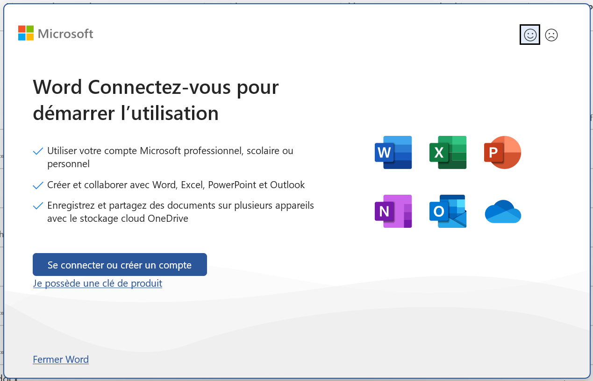
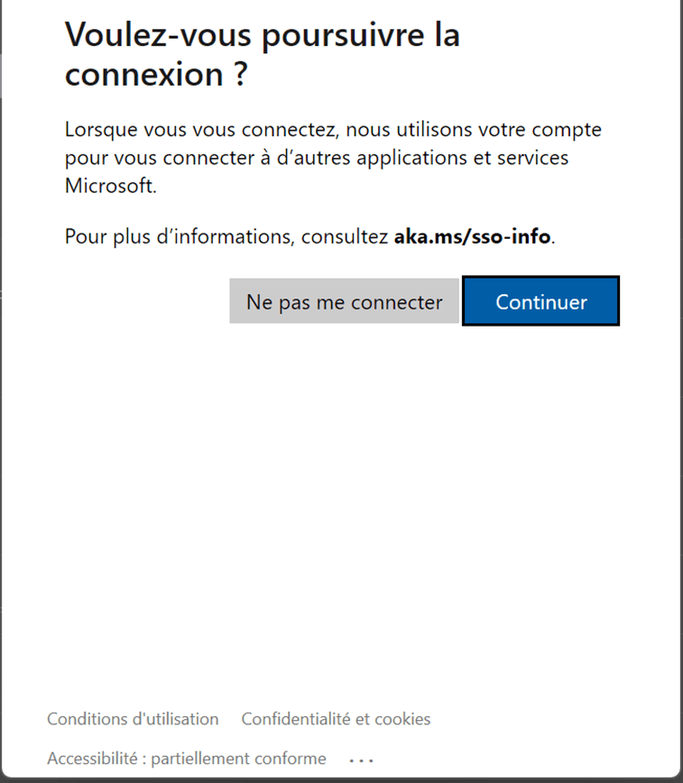
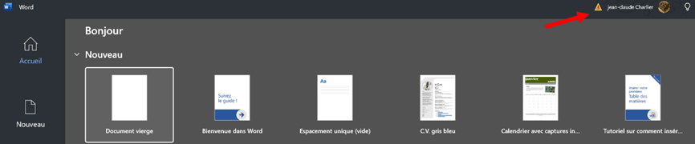
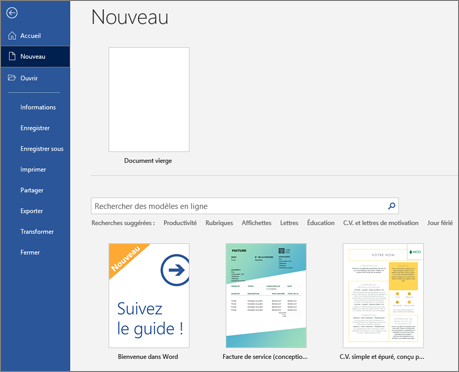
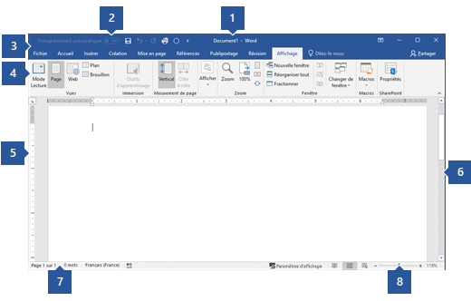
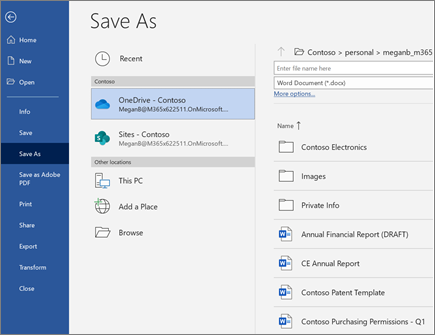

De l’installation de Microsoft 365 jusqu’au premier document Word : installation, connexion, activation, ouverture, enregistrement et organisation des fichiers.
Microsoft Word fait partie des applications Microsoft 365 proposées avec les licences qui incluent les applications de bureau. Pour installer et activer Microsoft 365 Apps, l’utilisateur doit disposer d’une licence appropriée et se connecter avec le compte associé.
Compte et licence Dans un environnement professionnel ou scolaire, l’organisation attribue la licence Microsoft 365 Apps à l’utilisateur. Sans licence appropriée, l’installation des applications Microsoft 365 n’est pas proposée.
Activation Microsoft 365 Apps utilise une activation liée à l’utilisateur et aux services Microsoft dans le cloud. Une connexion à Internet est nécessaire périodiquement pour conserver l’activation.
À retenir : l’installation des applications de bureau dépend de la licence attribuée au compte. Ce cours utilise uniquement la documentation Microsoft Learn comme référence technique.
01 • INSTALLATION
Étape 1 — Installer les applications Microsoft 365
Commencez par installer les applications Microsoft 365 sur votre ordinateur. Microsoft Learn indique que la procédure Windows commence par une connexion à Microsoft 365 avec votre compte professionnel, puis par le téléchargement du programme d’installation.
▶ Regarder : Installer les applications Microsoft 365
Cette vidéo officielle Microsoft Learn montre comment installer les applications Microsoft 365 sur un appareil Windows.
Vidéo intégrée depuis Microsoft Learn. Si le lecteur ne s’affiche pas dans votre navigateur, utilisez le lien Microsoft Learn ci-dessous.
1.1 — Se connecter pour télécharger Microsoft 365 Apps
Accédez à Microsoft 365 Apps dans votre navigateur.
Connectez-vous avec votre compte professionnel.
Dans le coin supérieur droit, sélectionnez Installer des applications, puis Applications Microsoft 365.
1.2 — Télécharger le programme d’installation
La page Mon compte s’ouvre.
Sous Applications Office & appareils, sélectionnez Installer Office.
Le fichier OfficeSetup.exe est téléchargé dans votre dossier Téléchargements.
1.3 — Installer les applications
Ouvrez OfficeSetup.exe.
Lorsque Windows demande si vous souhaitez autoriser l’application à apporter des modifications à votre appareil, sélectionnez Oui.
Attendez la fin de l’installation. Elle peut prendre plusieurs minutes.
Lorsque la fenêtre indiquant que l’installation est terminée apparaît, sélectionnez Fermer.
Les applications Microsoft 365 sont maintenant disponibles dans le menu Démarrer.
Après l’installation : ouvrez Microsoft Word. Au premier démarrage, Word peut vous demander de vous connecter. Passez alors à l’Étape 2 — Se connecter à Microsoft 365 dans Word, illustrée par les captures ci-dessous.
Lors du premier démarrage de Word, l’application peut demander de vous connecter afin d’associer Word au compte Microsoft utilisé par votre établissement ou votre organisation. Les écrans peuvent varier selon la version de Microsoft 365 et la configuration de l’ordinateur.
2.1 — Démarrer la connexion dans Word
Ouvrez Microsoft Word.
Lorsque l’écran « Word — Connectez-vous pour démarrer l’utilisation » apparaît, sélectionnez Se connecter ou créer un compte.
Utilisez le compte professionnel ou scolaire auquel votre organisation a attribué la licence Microsoft 365 Apps.

Capture 1 — Démarrer la connexion dans Word. Sélectionnez « Se connecter ou créer un compte » pour associer Word au compte Microsoft 365 utilisé par votre organisation.
2.2 — Poursuivre la connexion si Windows affiche une confirmation
Selon la configuration de votre organisation, Windows peut afficher un écran demandant si vous souhaitez poursuivre la connexion afin d’utiliser le compte avec d’autres applications et services Microsoft.
Lisez le message affiché à l’écran.
Pour poursuivre l’association du compte avec les services Microsoft, sélectionnez Continuer.
Terminez ensuite les éventuelles étapes d’authentification demandées par votre organisation.

Capture 2 — Confirmation de connexion. Cet écran peut apparaître selon la configuration Windows et Microsoft 365 de l’établissement.
2.3 — Vérifier que Word est connecté
Après la connexion, Word affiche sa page d’accueil. Le compte connecté apparaît généralement dans la partie supérieure de la fenêtre. Vous pouvez alors créer un nouveau document ou ouvrir un document existant.
Vérifiez que votre nom ou compte apparaît dans Word.
Pour commencer un nouveau travail, sélectionnez Document vierge.
Si le compte affiché n’est pas celui attendu, vérifiez le compte avant de commencer à travailler.

Capture 3 — Word après la connexion. La page d’accueil permet notamment de créer un « Document vierge » et de vérifier le compte connecté.
Important : Microsoft Learn indique que Microsoft 365 Apps doit être associé à un utilisateur disposant d’une licence appropriée. Les options visibles pendant la connexion peuvent différer selon les paramètres définis par votre organisation.
Étape 3 — Ouvrir Word et activer Microsoft 365 Apps
Avec le mode de licence utilisateur par abonnement, l’activation de Microsoft 365 Apps est associée à l’utilisateur. Microsoft Learn indique que l’utilisateur se connecte avec son compte Microsoft Entra associé à la licence.
Sous Windows, ouvrez le menu Démarrer et sélectionnez Word.
Si Word vous demande de vous connecter, utilisez le compte professionnel ou scolaire auquel la licence Microsoft 365 Apps est attribuée.
Terminez l’authentification demandée par votre organisation.
Une fois l’utilisateur correctement licencié et connecté, Microsoft 365 Apps communique avec les services de licences et d’activation Microsoft pour activer l’installation.
Connexion Internet : Microsoft Learn précise que Microsoft 365 Apps doit pouvoir se connecter au service de licences au moins une fois tous les 30 jours pour rester entièrement fonctionnel. Après une période prolongée sans validation, les applications peuvent passer en mode de fonctionnalités réduites jusqu’à la prochaine activation.
Après l’installation, les applications Microsoft 365 apparaissent dans le menu Démarrer. Ouvrez Démarrer, recherchez Word, puis lancez l’application.
macOS
Après l’installation de Microsoft 365 Apps sur Mac, lancez Microsoft Word depuis les applications de macOS et connectez-vous avec le compte associé à votre licence si Word le demande.
Une fois Word ouvert, vous pouvez créer un nouveau document à partir d’un document vierge ou choisir un modèle proposé par Word.
Dans Word, cliquez sur l’onglet Fichier.
Dans le menu situé à gauche, sélectionnez Nouveau.
Choisissez Document vierge pour créer un document vide.
Vous pouvez également sélectionner un modèle proposé ou rechercher un modèle en ligne.
Une fois le document ouvert, cliquez dans la page et commencez à saisir votre texte.

Créer un nouveau document dans Word. Dans Fichier → Nouveau, sélectionnez Document vierge pour commencer avec une page vide, ou choisissez un modèle adapté à votre travail.
Document vierge
Choisissez cette option lorsque vous souhaitez commencer votre document à partir d’une page vide.
Modèles
Word propose également différents modèles prédéfinis. Vous pouvez sélectionner un modèle affiché ou rechercher un modèle en ligne.
Conseil : vous pouvez également créer rapidement un nouveau document avec Ctrl + N sous Windows ou Cmd + N sur Mac.
Après la création : commencez à saisir votre contenu, puis donnez un nom clair au document et enregistrez-le dans le dossier demandé, par exemple TP00_Nom_Prenom.docx.
06 • OUVRIR UN FICHIER
Ouvrir un document Word existant
Un document Word porte généralement l’extension .docx. Plusieurs méthodes sont possibles.
Depuis Word
Fichier → Ouvrir, puis choisissez un document récent, OneDrive ou parcourez les dossiers de l’ordinateur.
Depuis Finder / Explorateur
Localisez le fichier .docx puis double-cliquez dessus. Word s’ouvre avec le document.
Depuis Word pour le web
Sur la page d’accueil, utilisez les fichiers récents ou l’option permettant de charger un fichier.
Depuis OneDrive
Localisez le document dans votre espace OneDrive puis ouvrez-le dans le navigateur ou l’application de bureau.
Problème fréquent : si le fichier téléchargé est encore dans Téléchargements, pensez à le déplacer dans votre dossier de cours avant de commencer.
07 • INTERFACE
Comprendre l’interface de Microsoft Word
Après avoir ouvert ou créé un document, repérez les principales zones de l’interface Word. La capture ci-dessous identifie huit éléments importants que vous utiliserez régulièrement pendant le cours.

Interface de Microsoft Word sous Windows. Les numéros 1 à 8 correspondent aux éléments expliqués ci-dessous. L’apparence peut varier légèrement selon la version de Word installée.
1 — Barre de titre
Affiche le nom du document ouvert et l’application Word. Elle contient également les commandes de la fenêtre.
2 — Barre d’outils Accès rapide
Regroupe des commandes fréquemment utilisées, par exemple Enregistrer, Annuler et Rétablir.
3 — Onglets du ruban
Permettent de passer entre les principaux groupes de commandes : Fichier, Accueil, Insertion, Création, Mise en page, Références, Publipostage, Révision et Affichage.
4 — Ruban de commandes
Présente les outils associés à l’onglet sélectionné. Dans la capture, l’onglet Affichage est actif.
5 — Règles
Les règles horizontale et verticale servent de repères pour la mise en page, les retraits et les tabulations.
6 — Barre de défilement
Permet de parcourir le document verticalement lorsqu’il contient davantage de contenu que la zone visible.
7 — Barre d’état
Affiche des informations sur le document, notamment la page active, le nombre de mots et la langue.
8 — Affichage et zoom
Les commandes situées en bas à droite permettent de modifier le mode d’affichage et d’augmenter ou diminuer le niveau de zoom.
À retenir : pour ce cours, repérez surtout les onglets du ruban, le ruban de commandes, la zone du document, la barre d’état et le zoom. Le Cours 01 détaillera les commandes de l’onglet Accueil.
08 • ENREGISTRER
Étape 8 — Enregistrer un document Word
Après avoir créé ou modifié un document, enregistrez-le régulièrement. Lors du premier enregistrement, choisissez un nom clair, le format du fichier et l’emplacement où vous souhaitez le conserver.
8.1 — Utiliser « Enregistrer sous »
Dans Word, sélectionnez l’onglet Fichier.
Dans le menu de gauche, choisissez Enregistrer sous.
Sélectionnez l’emplacement souhaité, par exemple OneDrive, Ce PC ou Parcourir.
Saisissez un nom explicite pour votre document, par exemple TP00_Nom_Prenom.docx.
Vérifiez que le type de fichier correspond à un document Word (.docx), puis enregistrez le fichier.

Capture — Enregistrer sous dans Microsoft Word. Cet écran permet de choisir l’emplacement du document, de saisir son nom et de vérifier le format du fichier avant l’enregistrement.
Nom du fichier
Utilisez un nom clair et identifiable, par exemple TP00_Nom_Prenom.docx.
Emplacement
Choisissez soigneusement où enregistrer le document : OneDrive, un dossier local ou le dossier demandé pour le cours.
Conseil : après le premier enregistrement, utilisez régulièrement Ctrl + S sous Windows ou Cmd + S sur Mac pour enregistrer rapidement vos modifications.
À vérifier avant de fermer Word : le document possède le bon nom, il est enregistré au format .docx et vous savez dans quel dossier ou emplacement il se trouve.
09 • ORGANISATION
Fermer, retrouver et rouvrir un document
Assurez-vous que le document est enregistré.
Fermez le document puis Word.
Rouvrez Word et regardez la liste des documents récents.
Si nécessaire, utilisez Ouvrir et parcourez OneDrive ou vos dossiers.
Vérifiez le nom du fichier avant de reprendre votre travail.
Si Word se ferme accidentellement : Word dispose aussi de fonctions de récupération. Pour les fichiers Microsoft 365 stockés dans OneDrive/SharePoint, l’enregistrement automatique et l’historique des versions apportent une protection supplémentaire.
10 • TP GUIDÉ
TP 00 — Mon premier document Word
Objectif : mettre en pratique les compétences essentielles du Cours 00 : ouvrir Word, identifier l’interface, créer un document, l’enregistrer, le fermer puis le retrouver.
Durée indicative
20 à 30 minutes.
Fichier attendu
TP00_Nom_Prenom.docx
Dossier
Créez ou utilisez un dossier nommé Cours Word.
Partie A — Préparer le travail
Partie B — Créer le document
Saisissez le titre Mon premier document Word.
Sous le titre, saisissez votre nom et prénom.
Ajoutez la date du jour.
Rédigez un court paragraphe de 3 à 5 phrases présentant votre expérience avec Microsoft Word et ce que vous souhaitez apprendre.
Partie C — Enregistrer et vérifier
Critères de réussite : le fichier porte le bon nom, se trouve dans le bon dossier, contient le titre, votre identification, la date et le paragraphe demandé. Vous devez également être capable de fermer Word, retrouver le fichier et le rouvrir sans aide.
11 • QUIZ DE COMPRÉHENSION
Quiz — Vérifiez votre compréhension du Cours 00
Pour chaque question, choisissez une seule réponse. Cliquez ensuite sur Soumettre le quiz pour obtenir votre score sur 10 et votre pourcentage.
12 • EXERCICE D’AUTONOMIE
À vous de jouer
Sans reprendre les étapes précédentes, créez un nouveau document nommé Exercice00_Nom_Prenom.docx. Saisissez un titre et deux paragraphes, enregistrez-le dans un dossier Cours Word, fermez Word, retrouvez le fichier, rouvrez-le et ajoutez la date du jour. Terminez en produisant une version PDF.
Afficher les points à vérifier
Auto-évaluation : le nom est correct; le DOCX est dans le bon dossier; le fichier peut être retrouvé après fermeture; la modification est enregistrée; le PDF existe sans remplacer le DOCX.
Ressources Microsoft Learn
Les procédures techniques de ce cours sont vérifiées à partir de Microsoft Learn.
Cette version du Cours 00 utilise uniquement Microsoft Learn comme source externe pour les informations relatives à l’installation, aux licences et à l’activation de Microsoft 365 Apps. Les anciennes références et captures provenant de sources tierces ont été retirées.